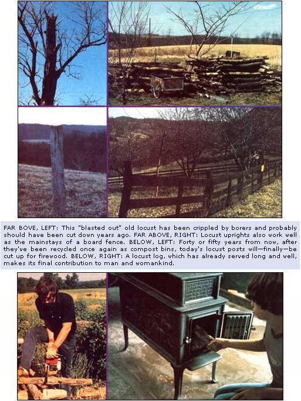

I suppose I would have felt a little guilty when I cut those black locust trees-they looked so young, clean-limbed, and tall-if a local (southeastern Ohio) state forester hadn't already given me some information that eased my mind.
This fella, you see, had told me that the life of a locust tree (in our area, at least) is pretty much a continual struggle with one pest or another. By the time its trunk is about four inches in diameter, for example, the locust borers have moved in. And these black and yellow beetles lay eggs-which hatch into hungry larvae with a taste for wood-deep in the body of the locust tree.
As you probably can imagine, it doesn't take long for the borers to reduce a healthy locust tree to something that resembles a well-used shotgun target. And, my informant added, if those pests don't kill a tree, the leaf miners probably will. (Emaciated yellow-brown leaves are the calling cards of the miner . . . foliage that can no longer produce the chlorophyll that is so vital to the life and growth of most plants.) The forester concluded by saying that, in his opinion, I would save my black locust trees from a lot of needless agony it I just cut down all that had trunks measuring from four to eight inches in diameter. . . and turned 'em into useful fenceposts.
Now it may sound a little silly to some folks for a person who runs a nearly selfsufficient farm to worry about felling a few trees. Especially when, if the facts be known, I needed those fencing supports-and I sure couldn't afford to go out and buy 'em-so I likely would have chopped down as many of the locusts as I required anyway. The tree expert's endorsement of this necessary harvest did make me feel better about the whole thing, though. If that's the mark of a silly person, then I guess I qualify.
When I asked the "old-timers" in my area about the best time to fell my trees, the response was just about unanimous: "Get 'em while the sap is down-in the fall or winter-and the posts will be stronger than 'spring-cut' wood . . . they'll be less likely to take root in your fence row and sprout new branches too. Green locust fences have been known to do that."
So, come October, I chopped a good supply of medium-sized trees, trimmed off the tops and branches for firewood, and-in accordance with the advice of my most trusted mentors-began to stack the poles right there in the forest, "log cabin style", to cure.
It seemed, though, that the more I looked at the open, box-shaped structure I was piling up, the more my memory nagged me. I knew that the growing form reminded me of something, but it wasn't till the last layer of logs went on that I figured out what that something was: a compost bin!
It took me a few hours to hand-and-truck haul those logs back to the barn, but they were eventually rebuilt into a proper "mulching box" that I could fill with a good mixture of compost. Needless to say my assorted farm critters weren't shy about the manufacture of the raw ingredients.
I had been told that the correct way to turn locust logs into usable poles is to strip the bark from each potential fencepost before it's stacked to cure. Partly out of laziness, though-and mostly because I just couldn't stand the "sweet and sour sewer gas" smell of freshly stripped locust-I neglected to attend to that little chore.
But the strangest thing happened: As the compost in the bin started to cook, and the winter winds picked up . . . before I knew it the combination of heat and gusts had peeled those poles for me! So I simply counted my blessings and gathered up the falling bark . . . some for kindling and the rest-which I shredded-to toss on top of the decomposing organic material as additional "fuel".
I suppose that if my posts had been anything less than locust, this type of curing-which doesn't allow much air to circulate around the wood-probably wouldn't have done the job. Black locust is just so danged dense, however, that it'll hold up halfway to forever without a lot of meticulous preparation.
Lots of folks talk about non-linear thought these days-and they may well have something-but a fence should be as straight as the terrain will allow. For one thing, a crooked enclosure distributes its considerable pressure every which way, and that will force its posts to lean-and fall-long before they normally should. Another reason to avoid the construction of crooked fences becomes immediately apparent the first time the hay gets high enough to cut. Someone (it could happen to anybody) is bound to try to drive the tractor and watch a flight of swallows at the same time. I figure that a straight fence might survive one of these attacks of rural reverie, but I just know a zigzagged structure wouldn't have a prayer.
The first thing I do, then, when I start to build a new fence, is stretch a taut string along its entire length and mark off the future location of every post with a small stone.
Nobody in his or her right mind likes digging postholes . . . it's just about the hardest farmwork there is. And, other than point out that a sharp digger (we call 'em "digging clams" here, and take a file to 'em at the end of each day) requires less effort to use . . . there's not much advice I can give to make the job easier.
In fact, some of the things I did when I built the fence I want to tell you about would only appeal to a masochist (or to somebody who wanted his or her work to last .. . in farm labor situations the two are often about the same).
I braced the posts in the newly dug holes with packed, crushed limestone. (If this rock is tamped tightly with a heavy "spud bar" or iron pole, and the stone is alternated with layers of soil, the uprights will stay in place even if a whole herd of cows decides to try to climb 'em.) I also poured a bit-not more than a cup or so-of used motor oil into each excavation to discourage underground crawlies. This wasn't necessary (I was assured) for locust posts-which are especially strong and have their own protective smell-but it seemed like a good habit to develop.
I had cut all of my uprights into eight-foot lengths (more or less), and, when setting the posts, sunk those that would later serve as corners a good three feet into the ground. Since I knew that the more numerous line posts wouldn't have as much strain on them, I only set their bases (always "plant" posts as they grow ... with the larger end down) two feet deep. Later I decided that there was no need for these line supports to stick six feet into the air, so I trimmed a foot or so from the top of each one. The small logs that I obtained this way were just the right size for my cookstove.
Finally, after I'd put in all of the uprights (my back still aches at the thought), I strung one wire-destined to be the uppermost strand on my fence-from the beginning to the end of the line of poles. I stapled the strand to each support-(lightly . . . so the wire could move under the fasteners as I pulled it tight). Then, with a fence stretcher, I made that upper strand taut. From there on the work was mostly repetition. Four more strands of wire-to make the enclosure both horse-and cattle-proof-and it was done.
The board fences-which I wanted in one area-were even easier to build ... once I'd located some affordable one-by-six rough-cut oak boards in twelve-foot lengths. By a stroke of luck (and as a result of a tedious search) I was able to buy the lumber for only 10 cents a board foot from the local one-man sawmill. It always pays to look around . . . .
Next I simply used nine- and ten-penny square flooring nails to spike three of the oak boards between each set of posts (which I had previously taken care to space 12 feet apart "on centers"). A one-by-four was then nailed vertically onto each locust post to cover the boards' butted joints. And, finally, I gave the whole fence a quick "paint job" with the rest of my recycled motor oil (for protection against weather and insects) and my structure was ready to keep things in (and other things out) for years.
OK. Stop and think. At this point those locust posts have already done two jobs for me . . . they first braced my compost pile and now they support my fence. But they certainly haven't stopped serving me yet. Let's look forward another 40 years or so-because that's how long a good locust fence should last-to the time when the enclosure will have to be torn down and rebuilt with new materials.
What will I do with those old posts (which will only be rotted out below the ground) a half century from now? Well, before I even start to worry about how the heck to get 'em out of the soil, the poles will all have to be "cleaned". To "clean" a fence means to remove every staple, scrap of wire, or metal bit from each post . . . and from the area around it. To do this necessary job (cattle, you see, frequently slurp up these tiny indigestibles and develop an illness called "hardware disease"), I'll need pliers, a hammer, and a container to hold the scraps I gather.
Then, after that chore is out of the way, I can remove the old posts. Unless I'm a lot smarter then than I am now, I'll probably just rock 'em back and forth till they get loose enough to pull. A friend of mine takes out his old uprights with a onelegged karate kick, but-since that's beyond my abilities today--it's unlikely that I'll be able to perform such gymnastics when I'm approximately 50 years older. [Maybe not ... but the sidebar which accompanies this article just might make that tencepost removal easier.-MOTHER.
When those uprights are all out of the ground, I'll straighten myself slowly, tote 'em back to the barn, and build up another compost pile. (That's a rerun, to be sure, but it'll sure enough be LIFE THREE for the locust posts.)
During the summer, the heap of decomposing mulch will settle and cook, and I'll probably be able to brew up a second batch in the fencepost "cabin" sometime before winter comes along ... just to make sure I'll have plenty of good organic material to put on my garden during the following growing season.
Like as not, that year will have one of those early-spring cold snaps. And, just as likely, my firewood will have run out by then and there won't be anything fit to burn for a country mile in any direction. Except for those old locust logs. They'll be ready-years old, dried in the winter wind, with no staples that might catch my saw-to be cut, split, and popped into the wood stove. And that's LIFE FOUR.
So you see, even something as "dumb as a fencepost" can be used over and over again. My locust poles will have been with the family for years, from compost pile to fence to compost pile to, finally, up in (very little) smoke. And while those "grandfather" logs hiss and sputter merrily (and generate a good 28 million Btu's a cord) I'll know that I've done everything possible to get full recycled value from the once-diseased trees. That knowledge, I'm sure, will warm me inside . . . while the cracklin' fire takes care of the rest.
More information on curing posts (and other do-it-yourself farm projects) can be found in the following back issues of this magazine:
[1] "Treated Fenceposts for Free", MOTHER NO. 29, pages 60-61.
[2] "Fence In, Fence Out, Part I", MOTHER NO. 34, pages 72-75.
[3] "Fence In, Fence Out, Part II", MOTHER NO. 35, pages 82-87.
(The above back numbers of the publication are available for $2.50 each plus 95d shipping and handling (for your total order) from THE Mother Earth News(restricted), P.O. Box 70, Hendersonville, North Carolina 28739.)
Another good source of information is the book, Fences, Gates, and Bridges, by George A. Martin (Stephen Greene Press, 1974). Hard cover. $5.95. Available in good bookstores or from Mother's Bookshelf, P.O. Box 70, Hendersonville, North Carolina 28739 (please add 95 shipping and handling when ordering by mail).
|
 |
|
|